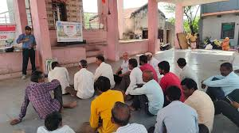
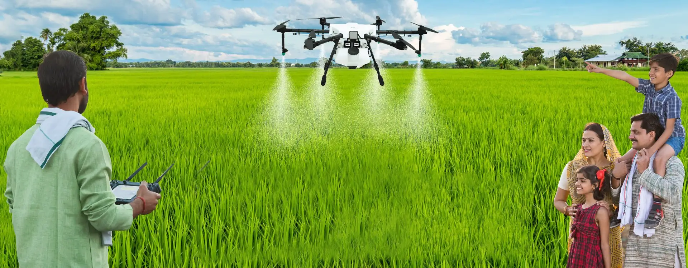

Extension Activities Gallery
SHG Exhibition
Kisan Mela
World soil day
Scientist visit to farm field

Visit to CICR Scientist to Bt cotton
Cleaness awareness programs for students

Kisan Meeting
Custard aaple Program

Drone Method Demonstration
World Food Day

World Women Day

Azolla Method Demonstration